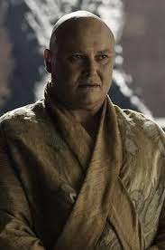

Roca Casterly es una fortaleza ubicada en las Tierras del Oeste de Poniente, ante las costas del Mar del Ocaso, que sirve como principal asentamiento de la Casa Lannister. Cuando los Targaryens invadieron y conquistaron los Siete Reinos, fueron nombrados Guardianes del Oeste.
Casa Lannister
Lema: “Un Lannister siempre paga sus deudas”
Ubicación: Casterly Rock (Roca Casterly)

Gracias a las minas de oro de sus tierras, son la familia más rica de Poniente. Tywin Lannister sirvió como Mano del Rey bajo el reinado de Aerys II Targaryen, hasta que los Targaryens fueron depuestos por Robert Baratheon.

Tywin Lannister
Patriarca, Señor de Casterly Rock, Guardián del Oeste. Ejerció como Mano del Rey de Aerys II Targaryen por casi veinte años, cargo que volvió a ocupar posteriormente durante los reinados de su nietos Joffrey y Tommen Baratheon. Es descrito como un hombre alto, fuerte, de ojos verde claro con vetas doradas. En su juventud tenía el pelo rubio dorado. En batalla suele ir con una armadura carmesí resaltada de dorado. Es asesinado por Tyrion, quien le dispara en el vientre con una ballesta.

Cersei Lannister
Hija mayor de Lord Tywin Lannister; esposa del rey Robert Baratheon; reina de los Ándalos, los Rhoynar y los Primeros Hombres; señora de los Siete Reinos y Protectora del Reino. Su padre organizó un matrimonio arreglado con el desagradable e infiel Robert Baratheon, que no hizo sino catapultarla a los brazos de su hermano mellizo, Jamie. Odia a Tyrion y preferiría verle muerto. Le culpa por la muerte de su madre y le desprecia por su fealdad e inteligencia. Cersei ama a sus hijos por encima de todo. Y los ama con locura, en el sentido más literal de la palabra. Muere aplastada por el lugar que tanto había defendido y abrazada a su eterno amante Jaime.

Jaime Lannister
Apodado Matarreyes, es el Lord Comandante de la Guardia Real del rey Tommen I Baratheon. Es el segundo hijo de Lord Tywin Lannister. Se ganó el apodo de Matarreyes tras asesinar al rey Aerys II al término de la Rebelión de Robert. Durante la mayor parte de su vida, Jaime ha mantenido una relación incestuosa en secreto con su hermana gemela, Cersei. Ha engendrado tres hijos con ella, Joffrey, Myrcella y Tommen, aunque la mayor parte del reino cree que su padre es el esposo de Cersei, el rey Robert Baratheon. Cersei, con miedo y desesperada, le suplica a Jaime que no la deje morir así, a lo que Jaime le revela sus últimas palabras: «en este mundo, solo importamos tú y yo». En ese instante, el edificio colapsa sobre los dos hermanos.

Tyrion Lannister
Es educado, perspicaz y calculador, pero recibe poco respeto de su padre Tywin por estas cualidades, debido a su deformidad y a la muerte de su madre durante el parto. Es capaz de ser cruel con sus enemigos, pero también de sentir empatía con personas marginadas y maltratadas. Tyrion es acusado de asesinar a su sobrino Joffrey y, tras una pequeña reunión del Consejo del Rey, es llevado ante al trono para enfrentar a un jurado compuesto por su padre Tywin, es sometido a un juicio por combate y elige como campeón a Oberyn Martell. Mas adelante es apresado por Daenerys por alta traición y esperando para ser condenado a muerte, Tyrion sobrevive tras la muerte de Daenerys a manos de Jon. Es liberado por el nuevo Rey Bran Stark, que lo nombra su "mano".

Joffrey Baratheon
Primogénito y heredero del rey Robert Baratheon, pero en realidad nació como fruto del incesto de su madre, la reina Cersei Lannister, con su hermano Jaime Lannister. Creció como un muchacho consentido por su madre, siendo un joven cruel, caprichoso, imprudente, cobarde y con una marcada vena sádica. El rey muere en brazos de su madre envenenado en el día de su boda con Margaery Tyrell.

Myrcella Baratheon
Es la única hija del rey Robert Baratheon y la reina Cersei Lannister, su padre biológico es su tío Jaime Lannister. Asesinada por el beso envenenado de Ellaria Sand, por venganza de la muerte de Oberyn Martell.

Tommen Baratheon
El tercer hijo del rey Robert Baratheon y la reina Cersei Lannister. Al igual que sus dos hermanos, Joffrey y Myrcella, su padre biológico es realmente Ser Jaime Lannister. Tommen asciende al Trono de Hierro tras la muerte de su hermano mayor. Tras el genocidio provocado en el Septo a manos de su madre, el Rey Tommen se quitó la vida al aventarse de una de las torres más altas de Desembarco del Rey

Gregor Clegane
Conocido como "La Montaña". Hombre enorme y extremadamente fuerte, de carácter solitario y muy violento, que inspira terror. Es la sombra de Cersei y su brazo ejecutor. Sandor se arroja junto a su hermano desde los muros de la fortaleza hacia el fuego que consume Desembarco del Rey.

Sandor Clegane
Conocido por su apariencia aterradora, su actitud hosca y brusca y sus capacidades como guerrero, Sandor es apodado «El Perro» por su lealtad a sus señores y por cumplir las órdenes. De niño, Sandor recibió brutales quemaduras faciales cuando su hermano Gregor aplastó su cara en un brasero. Debido a ello, llegó a odiar el fuego, a su hermano y la hipocresía de los caballeros en general. La muerte de Sandor tuvo un final poético, se sacrificó arrojandose a las llamas para vencer a su cruel hermano Gregor.

Varys
Apodado La Araña, Varys ejerció como Consejero de los Rumores durante los reinados de Aerys II Targaryen, Robert Baratheon, Joffrey Baratheon y Tommen Baratheon. Reúne información de sus espías, a quienes llama "pajaritos". Persona poco confiable. Daenerys lo asesina quemándolo vivo tras pronunciar a su único dragón vivo su famosa frase, "Dracarys".

Bronn
Mercenario de baja extracción social pero de grandes habilidades en el combate. Tras la Batalla del Aguasnegras fue nombrado caballero y se casó con Lady Lollys Stokeworth. Se convierte en el Capitán de la Guardia Personal de Tyrion Lannister, por pedido de Tyrion, Bronn entrena al ya en ese momento manco Jaime Lannister. Este es el comienzo de la amistad con el otro hermano Lannister. Termina como parte del gobierno de Bran Stark (le nombra consejero de la Moneda). Aparte, Tyrion cumple su palabra y le convierte en el Señor de Altojardín.

Lancel Lannister
Primo de Cersei, Jaime y Tyrion. Sirvió como escudero del rey Robert Baratheon y fue directamente responsable por su muerte. Abandona a su familia y tierras para ingresar en la Sagrada Orden de los Hijos del Guerrero. Es asesinado por la reina Cersei, cuando prende el fuego valyrio bajo el Gran Septo de Baelor.